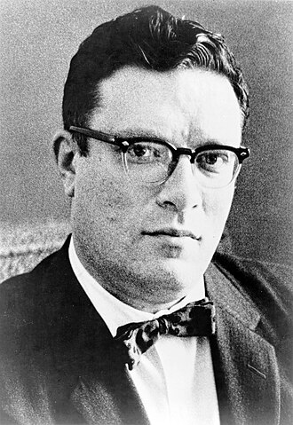

Isaac Asimov
Source Card

Photo

Isaac Asimov was an American writer and professor of biochemistry at Boston University. During his lifetime, Asimov was considered one of the "Big Three" science fiction writers, along with Robert A. Heinlein and Arthur C. Clarke. He wrote or edited more than 500 books. He also wrote an estimated 90,000 letters and postcards. Best known for his hard science fiction, Asimov also wrote mysteries and fantasy, as well as popular science and other non-fiction, including guides to the Bible and Shakespeare.
External Links
This page aggregates references to the source material behind Name Lore entries.